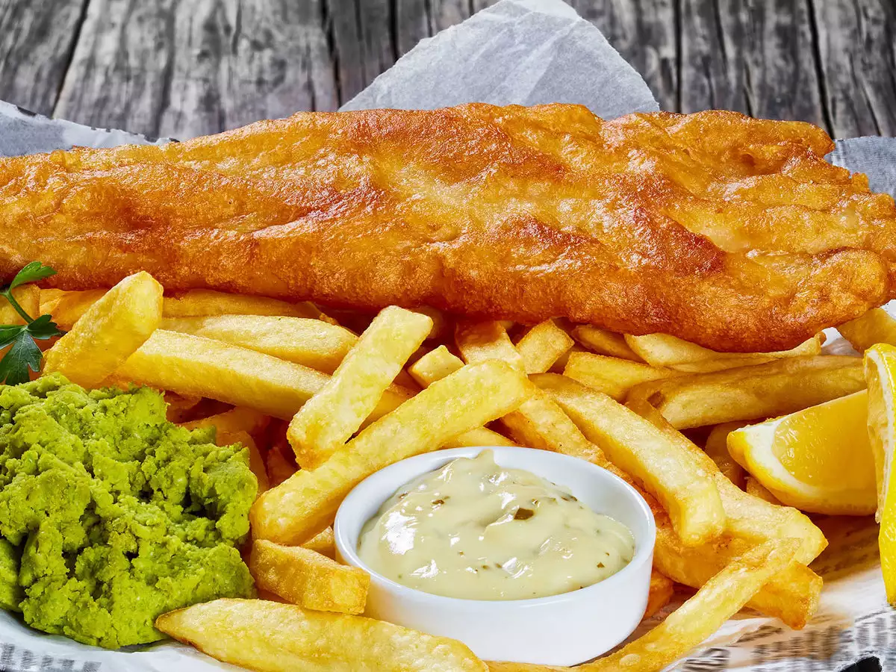

Classic British Chippy

Ingredients
about 1 litre sunflower oil, for frying
2 thick skinless fillets of whiting, ling, pollock, haddock or cod (about 150g each)
2 large Maris Piper potatoes
tsp malt vinegar, plus extra to serve
75g self-raising flour, plus extra for dusting
small pinch of ground turmeric
125g cold lager or fizzy water
Method
1. Cut the potatoes into chips and soak in cold water for 5 mins, then wash until the water runs clear. Tip into a pan of cold water with a pinch of salt and 1 tsp vinegar. Bring to a simmer, then turn down the heat and simmer gently for 10-12 mins until cooked through but not falling apart. Drain gently, then place on a tray in a single layer and chill until needed. Can be prepared a day ahead.
2. To make the tartare sauce, chop the cornichons, capers and shallot (finely chop if you prefer a smooth sauce), then combine with the parsley, mayo and a pinch of salt. Will keep chilled for up to 24 hours.
3. When you’re ready to fry, prepare the batter. Tip the flours and turmeric into a bowl with a pinch of salt, pour over the beer or fizzy water, and mix quickly until everything just comes together to the consistency of double cream – do not over-beat, a few lumps are fine. Keep chilled.
4. Pour the oil into a deep, wide pan like a wok, or heat a deep-fat fryer to 180C. If using a pan or wok, ensure that it is no more than two-thirds full with oil. Heat the oil until it is shimmering and carefully lower in the chips using a slotted spoon. Fry for 8-10 mins, gently stirring occasionally until golden and crisp. Transfer to kitchen paper to drain.